Equity Factor Research · S&P 500 Momentum
What drives the S&P 500 Momentum Index, and can its risk be controlled?
The academic momentum premium has faded since the late 1990s, yet the Invesco S&P 500 Momentum ETF (SPMO) compounded at 17.5% a year against 14.3% for the S&P 500 over 2015–2025. This study replicates its index with CRSP data (correlation 0.992 with SPMO) and decomposes the strategy into its three ingredients, namely momentum selection, market-cap weighting and a volatility adjustment.
In-sample, SPMO's returns are largely explained by market beta, momentum exposure and a large-cap tilt, with a positive but statistically insignificant alpha. Its edge over 2015–2025 came from holding the S&P 500's large-cap momentum winners as a group, not from concentrated single-stock bets; the volatility adjustment adds nothing. Its weakness is drawdowns (−64% in 2000–2003). Sizing the position by a HAR forecast of next month's volatility raises the in-sample Sharpe ratio from 0.51 to 0.72 and roughly halves the maximum drawdown. In a pre-registered out-of-sample test on 1975–1994 the improvement has the same sign but is smaller and not significant (Exhibit 1).
Exhibit 1. The left panel shows growth of $1 and drawdown over the whole in-sample period, SPMO proxy vs HAR volatility targeting (targeting starts in Apr-1998; before that both are fully invested). The right panel shows the pre-registered out-of-sample test, Apr-1978 to Mar-1995, with the S&P 500 and EWMA targeting; the dashed line marks the October 1987 crash. Monthly total returns before costs.
SPMO has been one of the standout equity ETFs of the past two years. Measured with CRSP total returns, it gained 45.8% in 2024 and 26.6% in 2025, against 24.9% and 17.7% for SPY. Over its full history (Nov-2015 to Dec-2025) it compounded at 17.5% a year versus 14.3% (Table 1).
This is puzzling. Hwang and Rubesam (2015) find that the momentum premium in U.S. stocks largely disappeared after the late 1990s, and in this sample the Fama-French momentum factor (UMD) earned a Sharpe ratio of only 0.16 over 2015–2025 (0.30 over 1995–2014). How did a momentum ETF beat the market while the momentum factor faded?
SPMO's index is often described simply as "momentum", but it combines three ingredients. It selects stocks on momentum divided by volatility, and it weights them by market cap times a momentum score. The project asks two questions.
Sample design. The in-sample period is 1995–2025, which contains SPMO's whole live history. The
out-of-sample period is a held-out earlier period, 1975–1994, from the same survivorship-free
universe. Periods are split by rebalance reference date, so no portfolio spans both. The out-of-sample period
was evaluated once, after the design was frozen at git tag pre-oos. It overlaps the sample in which
momentum was first documented (Jegadeesh and Titman, 1993) and falls in a strong-momentum regime, so it tests
this project's construction choices, not the existence of momentum.
Table 1. SPMO, the CRSP replica and SPY by calendar year (CRSP total returns; 2015 covers Nov–Dec).
| Year | SPMO | SPMO proxy | SPY | SPMO − SPY |
|---|---|---|---|---|
| 2016 | 6.2% | 4.6% | 12.0% | −5.8% |
| 2017 | 27.7% | 31.4% | 21.7% | +6.0% |
| 2018 | −0.9% | 0.8% | −4.6% | +3.7% |
| 2019 | 25.9% | 24.1% | 31.2% | −5.3% |
| 2020 | 28.3% | 23.7% | 18.4% | +9.9% |
| 2021 | 22.6% | 21.6% | 28.7% | −6.1% |
| 2022 | −10.5% | −12.6% | −18.2% | +7.7% |
| 2023 | 17.5% | 17.4% | 26.2% | −8.7% |
| 2024 | 45.8% | 48.3% | 24.9% | +20.9% |
| 2025 | 26.6% | 24.9% | 17.7% | +8.9% |
| Nov-2015 to Dec-2025, a year | 17.5% | 17.0% | 14.3% | +3.2% |
Table 2. Selected data-validation checks (full report in reports/data_validation.md).
| Check | Result |
|---|---|
| Constituents per month-end within [495, 510] | 499–506 over 624 months |
| Member-months with a monthly return | 99.988% of 312,559 |
| Monthly return = compounded daily returns (1 bp) | 153 of 514,489 differ, all in delisting months |
| CRSP–Compustat link coverage of member-months | 99.85% |
| Book-equity coverage of member-months | 99.2% or more in every decade |
| Factor tables complete and aligned | 0 missing months, 1974–2025 |
Following S&P's methodology (S&P Dow Jones Indices, 2026), at the end of each February and August (reference month t), the replica applies four rules.
Ten remaining differences from the index are documented, for example total rather than float-adjusted market cap, raw x instead of S&P's winsorised z-score, and no 20% selection buffer.
The capped replica tracks SPMO with correlation 0.992 and tracking error 2.0% (Table 3), and returns 17.0% a year against SPMO's 17.5% (which is after fees).
The weight cap matters for replication accuracy, because SPMO applies it. Without it, correlation falls to 0.979 and the 2024 return jumps to 62.1%, against 45.8% for SPMO. It barely matters for long-run performance, since over 1995–2025 the uncapped and capped versions return 12.7% and 12.4% a year, with the same Sharpe ratio of 0.63.
Table 3. Fit to SPMO, Nov-2015 to Dec-2025 (122 months). Return is the compound annual growth rate; volatility and tracking error are annualised from monthly returns.
| Portfolio | Correlation with SPMO | Tracking error | Annual return | Annual volatility |
|---|---|---|---|---|
| Replica without the cap | 0.979 | 3.5% | 18.4% | 17.0% |
| SPMO proxy (capped) | 0.992 | 2.0% | 17.0% | 15.8% |
| SPMO | 1.000 | — | 17.5% | 15.9% |
| SPY | 0.885 | 7.5% | 14.3% | 15.0% |
Three switches define eight portfolios that share the same universe, rebalancing dates and holding rules; only selection and weights differ.
A three-digit code gives the switches, so 000 is the equal-weighted S&P 500 and 111
is the SPMO construction. Effects are differences of monthly returns. A conditional effect switches
one ingredient on with M fixed (e.g. C (market) = cap weighting within the S&P 500, C (momentum) = cap
weighting within the momentum quintile); an interaction is the difference between the two, e.g.
M × C = C (momentum) − C (market).
Table 4 reports the eight portfolios, and Exhibit 2 shows every effect with its confidence interval. No main effect is significant, and V contributes nothing (−0.4% a year, both in the market and among winners). The only significant effect is the M × C interaction, +2.8% a year (t = 2.84 with independent months, 2.39 Newey-West). Cap weighting loses 0.8% a year across the S&P 500 but gains 2.0% within the momentum quintile. No single pair of portfolios differs significantly on its own (Exhibit 3).
Table 4. The eight portfolios, Apr-1995 to Dec-2025 (369 months). Sharpe ratio uses the T-bill rate; effective N = 1 / Σw², averaged over rebalances.
| Portfolio | Annual return | Volatility | Sharpe | Max drawdown | Effective N |
|---|---|---|---|---|---|
| 000 S&P 500, equal weight | 11.7% | 16.7% | 0.61 | −54.9% | 498 |
| 001 S&P 500, 1 / σ | 11.5% | 15.2% | 0.64 | −51.6% | 456 |
| 010 S&P 500, market cap | 11.0% | 15.2% | 0.61 | −50.0% | 114 |
| 011 S&P 500, market cap / σ | 10.7% | 14.0% | 0.64 | −46.8% | 99 |
| 100 Top quintile, momentum | 10.7% | 19.1% | 0.51 | −61.1% | 73 |
| 101 Top quintile, momentum / σ | 10.9% | 17.0% | 0.56 | −52.0% | 86 |
| 110 Top quintile, momentum × market cap | 13.0% | 19.7% | 0.60 | −70.1% | 27 |
| 111 Top quintile, momentum × market cap / σ (uncapped) | 12.7% | 17.8% | 0.63 | −64.5% | 27 |
| SPMO proxy (capped) | 12.4% | 17.4% | 0.63 | −64.1% | — |
| SPY | 10.8% | 15.0% | 0.60 | −50.8% | — |
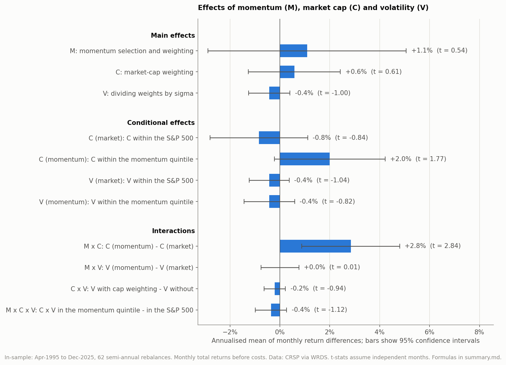
Exhibit 2. Every effect of the 2 × 2 × 2 design, annualised, with 95% confidence intervals (independent months). Only M × C is clearly away from zero.
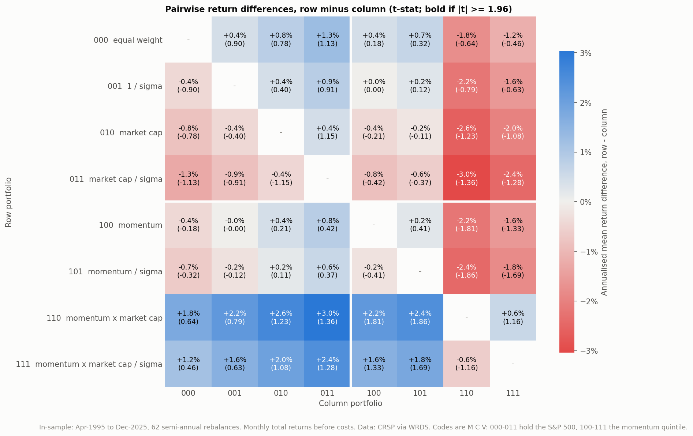
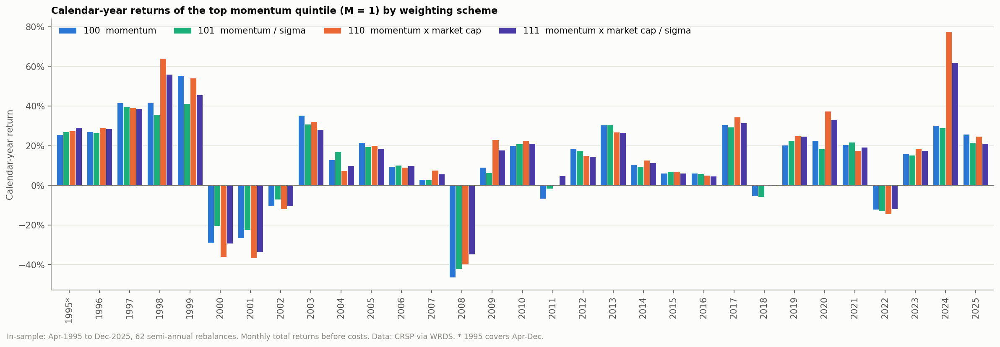
Exhibit 3. The top panel shows the annualised return difference for every pair of portfolios (row minus column, t-stat in brackets; none of the 28 pairs is significant on its own). The bottom panel shows calendar-year returns of the four momentum-quintile portfolios; 111 is uncapped.
The interaction is the only significant effect, so it deserves scrutiny. Is it a few months, a few stocks, or a factor in disguise?
M × C is concentrated in a few episodes, namely 2000Q4, 2009Q2, the post-COVID rebound and 2024Q1 (Exhibit 4). Excluding its two largest calendar years (+33.6% in 2009 and +29.7% in 2024), it falls to +1.4% a year (t = 1.48). Two different mechanisms produce it (Table 5).
These episodes explain the average of M × C. They do not show that the strategy's edge relies on a few stocks; that question is answered by the double sort below.
| Episode | C (market) | C (momentum) | M × C | Main source |
|---|---|---|---|---|
| 2000Q4 dot-com bust | −14.4% | −4.0% | +10.3% | cap weighting fell more in the whole market |
| 2009Q2 post-crisis rebound | −9.3% | +3.8% | +13.1% | small, distressed stocks rebounded |
| Apr-2020 to Mar-2021 | −15.5% | +5.9% | +21.4% | both; AAPL and MSFT among winners |
| 2024Q1 mega-cap rally | +1.9% | +21.6% | +19.7% | NVDA among winners |
Table 5. The four largest M × C episodes; effects compound each portfolio's returns over the episode.
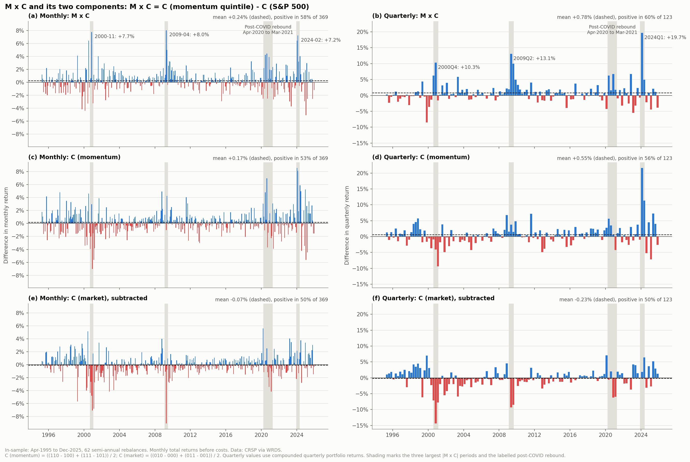
Exhibit 4. M × C (top) and its two components by month (left) and quarter (right). C (market) is subtracted, so its negative bars raise M × C. Shading marks the largest episodes.
Replace continuous weight tilts with groups of stocks, so no single name can dominate. At each rebalance the S&P 500 is sorted into quintiles of momentum ÷ σ, then each momentum quintile is sorted into size quintiles (a conditional sort with about 20 stocks per cell, equal-weighted). A conditional sort is used because momentum and size are correlated, and an independent sort would leave cells such as small winners almost empty; the cost is that S5 is not the same firm size in every momentum quintile. Size is measured as current market cap and, as a check, market cap twelve months earlier, before the momentum window.
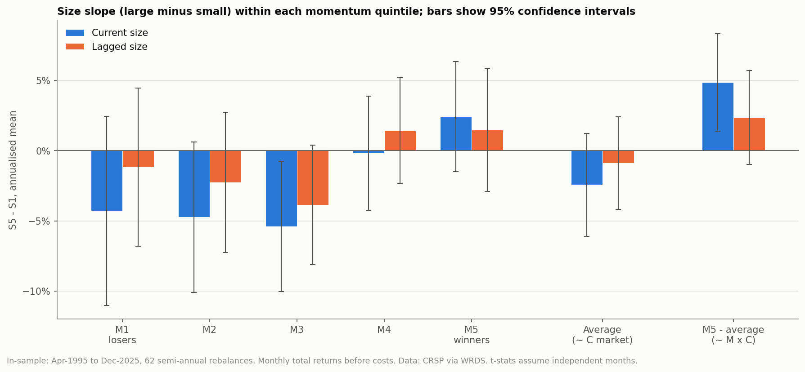
Exhibit 5. Size slope (S5 − S1) by momentum quintile, its average and the interaction, with 95% confidence intervals (independent months).
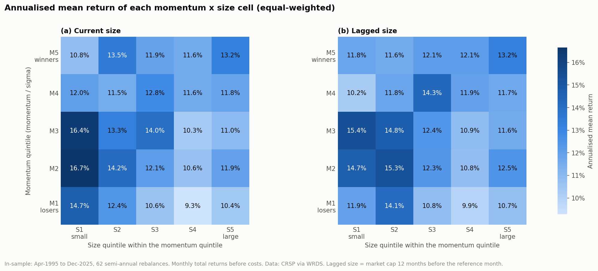
Exhibit 6. Annualised mean return of each momentum × size cell, 1995–2025, with size measured now (left) and twelve months earlier (right). Equal-weighted cells of about 20 stocks.
Table 6. Mean and factor-adjusted alpha, % a year (Newey-West t), Apr-1995 to Dec-2025. "Mean" is 12 × the arithmetic monthly mean, not a compound return. The proxy row uses its return in excess of the T-bill rate and is a reference, not a test of an effect.
| Series | Mean | FF5 + UMD | + ST_Rev | + ST_Rev + LT_Rev |
|---|---|---|---|---|
| C (market) | −0.8% (−0.65) | −0.1% (−0.15) | −0.1% (−0.16) | −0.1% (−0.13) |
| C (momentum) | +2.0% (1.58) | +1.7% (1.65) | +1.8% (1.69) | +1.8% (1.76) |
| M × C | +2.8% (2.39) | +1.8% (1.71) | +1.9% (1.76) | +1.9% (1.78) |
| Size slope, M5 − average | +4.9% (2.45) | +4.3% (2.19) | +4.3% (2.14) | +4.4% (2.29) |
| Size slope, M5 − average, lagged size | +2.4% (1.28) | +1.2% (0.62) | +1.2% (0.58) | +1.2% (0.60) |
| SPMO proxy, excess return (reference) | +10.9% (3.03) | +0.7% (0.58) | +0.7% (0.58) | +0.7% (0.60) |
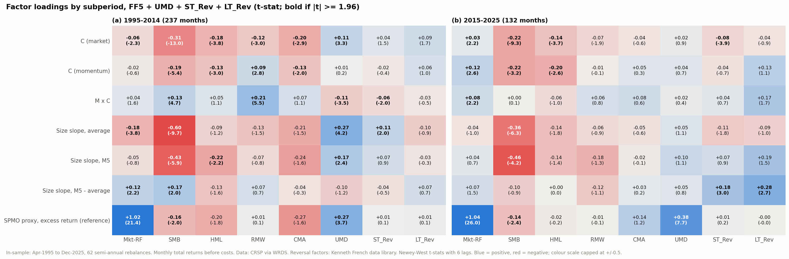
Exhibit 7. Factor loadings by subperiod, FF5 + UMD + both reversal factors (t-stat in brackets, bold if |t| ≥ 1.96). In 2015–2025 the proxy's momentum loading rises to 0.38 (t = 7.7) even though UMD itself earned little.
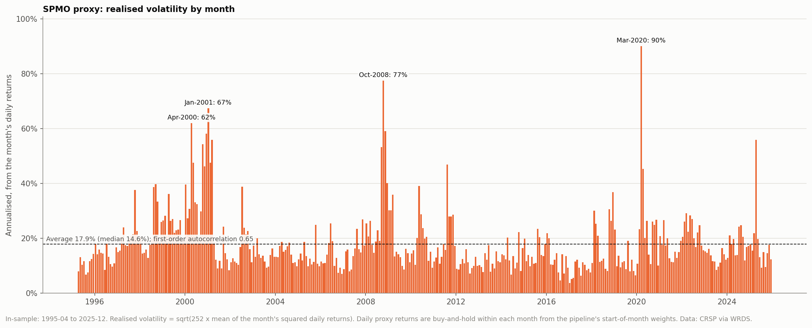
Exhibit 8. Monthly realised volatility of the SPMO proxy, 1995–2025. High-volatility months come in clusters (2000–2002, 2008–2009, 2020, 2022).
The forecast's out-of-sample R² (log volatility) is 0.39, against 0.33 for last month's volatility (Exhibit 9). Targeting raises the Sharpe ratio from 0.51 to 0.72 (z = 2.55) and cuts the maximum drawdown from −64% to −35% over Apr-1998 to Dec-2025 (Table 7 and Exhibit 10). The gain comes from the two prolonged crises, when exposure fell to 0.25–0.5 for months; over 2015–2025 the two are level (0.89 vs 0.93).
The choice of target does not matter for the Sharpe ratio. With no cap and no costs, the target only scales exposure, so 10%, 15% and 20% give the same Sharpe (0.72) at different risk levels. The window does matter. Over the whole in-sample period, with fully invested warm-up years, the figures are 0.85 vs 0.63 (Exhibit 1).
Table 7. HAR volatility targeting, in-sample. z is the Jobson-Korkie test of the Sharpe difference (Jobson and Korkie, 1981), with the correction of Memmel (2003).
| Period | Portfolio | Annual return | Volatility | Sharpe | Max drawdown | Avg exposure | z |
|---|---|---|---|---|---|---|---|
| Apr-1998 to Dec-2025 | SPMO proxy | 9.8% | 17.6% | 0.51 | −64.1% | 1.00 | |
| HAR target 15% | 11.2% | 13.2% | 0.72 | −35.1% | 0.92 | +2.55 | |
| Apr-1998 to Dec-2014 | SPMO proxy | 5.8% | 18.6% | 0.28 | −64.1% | 1.00 | |
| HAR target 15% | 9.2% | 12.6% | 0.59 | −35.1% | 0.88 | +2.90 | |
| Jan-2015 to Dec-2025 | SPMO proxy | 16.3% | 15.7% | 0.93 | −23.5% | 1.00 | |
| HAR target 15% | 14.3% | 14.1% | 0.89 | −17.7% | 0.98 | −0.32 |
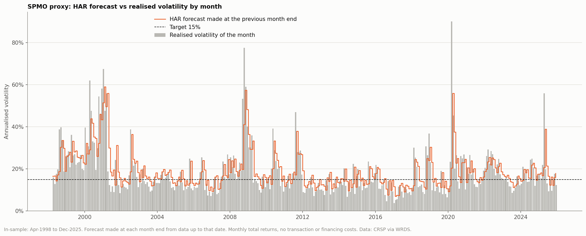
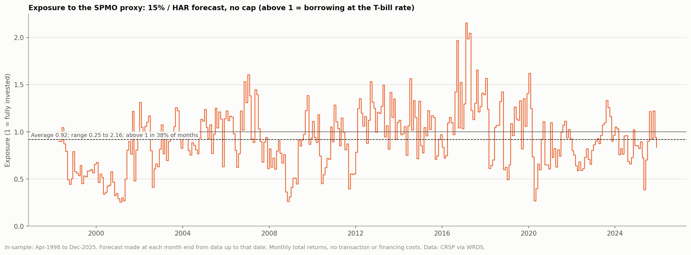
Exhibit 9. The top panel compares the HAR forecast made at each month end with the realised volatility of that month. The bottom panel shows the resulting exposure, which ranges from 0.25 to 2.16.
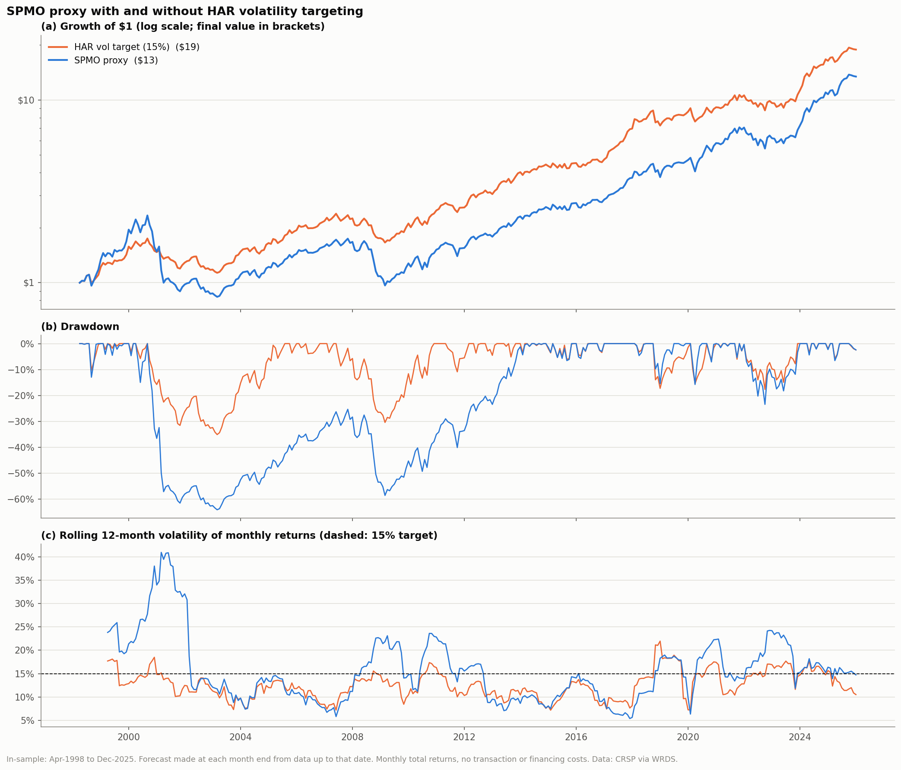
Exhibit 10. Growth of $1, drawdown and rolling 12-month volatility (against the 15% target) of the SPMO proxy with and without HAR targeting.
All four beat the unmanaged proxy significantly (Table 8), so the value of targeting does not hinge on the model. But the rankings invert. By forecast accuracy the order is ridge > GARCH > HAR > EWMA, while by Sharpe ratio it is HAR > EWMA > GARCH > ridge, and ridge is significantly worse than HAR.
Forecast accuracy is not investment value. Accuracy averages errors over all months; targeting gains come from exposure during a few prolonged crises. Slow, smooth forecasts such as HAR and EWMA stay de-risked through those episodes, while ridge, with unstable coefficients early on, re-levered into the 2001–02 decline (Exhibit 11).
Table 8. Four forecasts, Apr-2000 to Dec-2025 (309 months). R² is out-of-sample, log volatility. z is the Jobson-Korkie test of the Sharpe difference.
| Forecast | R² (log vol) | Annual return | Sharpe | Max drawdown | z vs unmanaged | z vs HAR |
|---|---|---|---|---|---|---|
| Unmanaged proxy | — | 7.2% | 0.39 | −64.1% | ||
| HAR | 0.353 | 9.8% | 0.65 | −35.1% | +2.93 | |
| EWMA (0.97) | 0.264 | 9.9% | 0.63 | −34.1% | +2.55 | −0.51 |
| GARCH(1,1) | 0.379 | 9.2% | 0.62 | −37.5% | +2.72 | −1.24 |
| Ridge (10 features) | 0.403 | 8.9% | 0.58 | −40.2% | +2.19 | −2.95 |
| Last month's volatility | 0.295 | — | — | — |
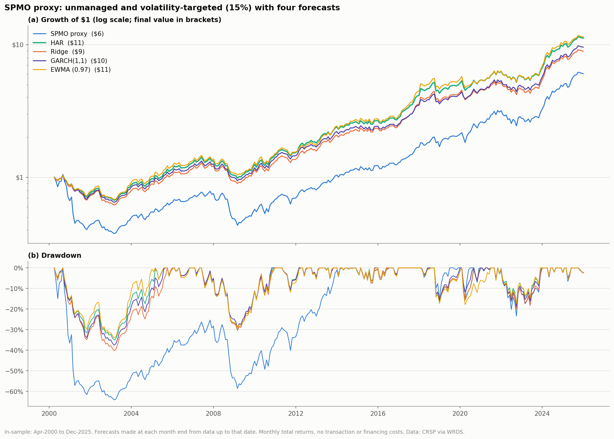
Exhibit 11. Growth of $1 and drawdown under the four forecasts. The gap opens in 2001–2003, when ridge carried more exposure into the second leg of the decline.
pre-oos), publish the evaluation script, then run it once.Table 9. Out-of-sample results, Apr-1978 to Mar-1995 (the months both forecasts cover).
| Portfolio | Annual return | Volatility | Sharpe | Max drawdown | Avg exposure | z vs proxy |
|---|---|---|---|---|---|---|
| SPMO proxy | 18.1% | 18.0% | 0.61 | −31.4% | 1.00 | |
| S&P 500 | 15.3% | 15.1% | 0.53 | −29.6% | 1.00 | |
| HAR target 15% | 20.2% | 18.4% | 0.70 | −24.7% | 1.08 | +1.23 |
| EWMA (0.97) target 15% | 20.2% | 18.4% | 0.70 | −23.5% | 1.09 | +1.15 |
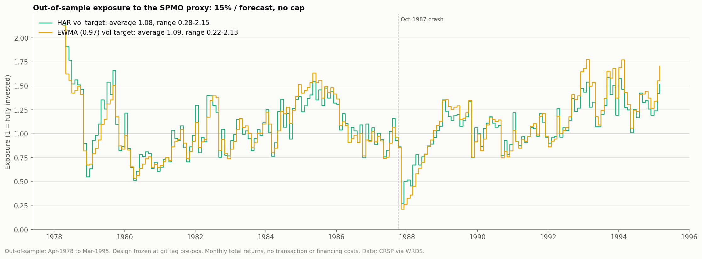
Exhibit 12. Out-of-sample exposure under HAR and EWMA; the dashed line marks October 1987. Growth and drawdowns are in Exhibit 1 (right).
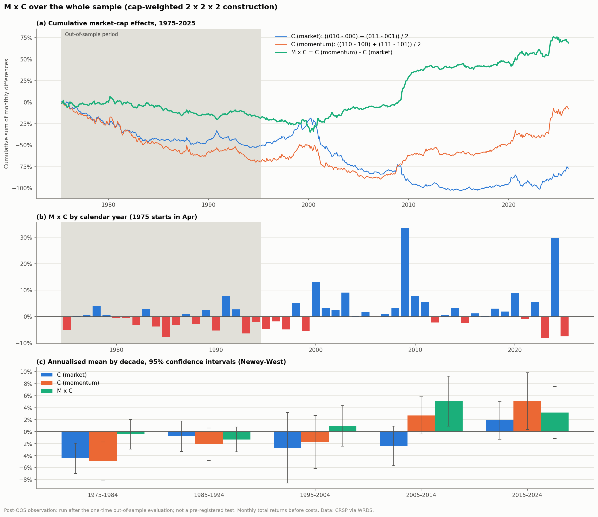
Exhibit 13. M × C over 1975–2025 (post-OOS), showing cumulative effects, calendar years and decade means with 95% confidence intervals (Newey-West). The shaded area is the out-of-sample period.
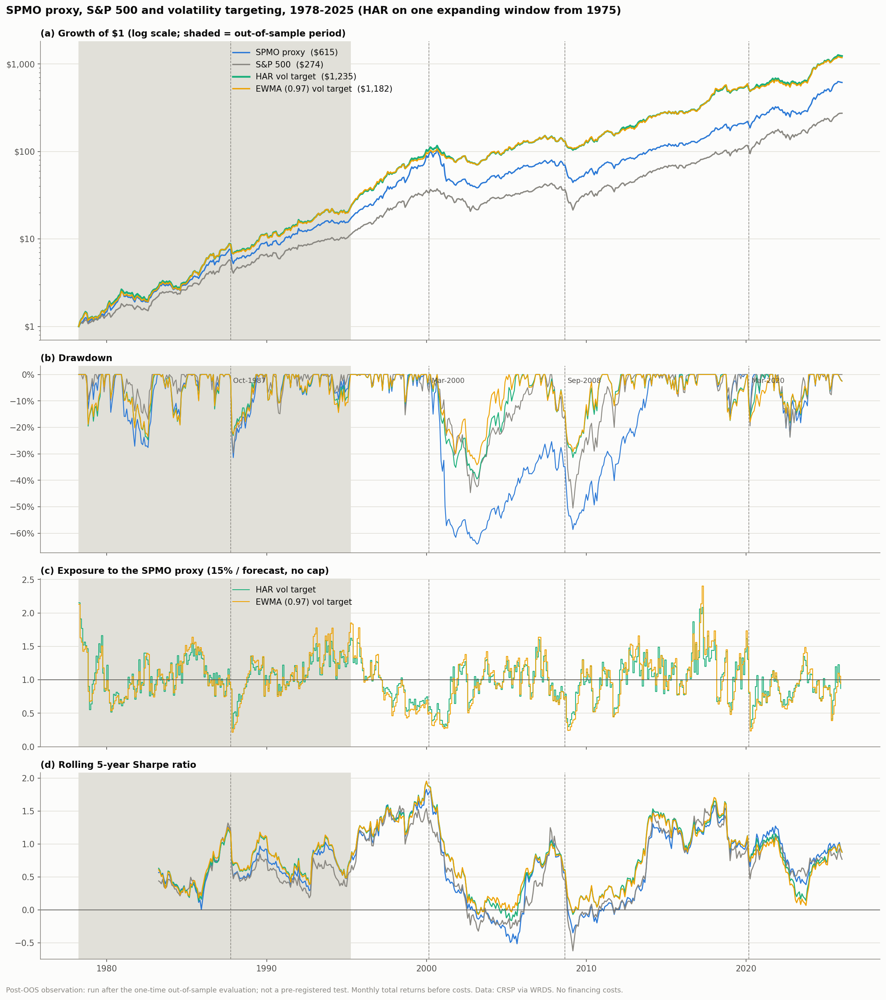
Exhibit 14. SPMO proxy, S&P 500 and volatility targeting over 1978–2025 (post-OOS), showing growth, drawdown, exposure and rolling five-year Sharpe ratio.
Tried, not adopted. The study also explored alternative weighting schemes within the momentum quintile (momentum squared, rank-based weights, lagged market cap, tighter weight caps and S&P's own score), a barbell of large winners and small caps, and volatility forecasts estimated on daily samples. The daily-sample forecasts did not improve volatility targeting. The weighting schemes and the barbell looked better in some periods, but they were selected after inspecting in-sample results, so their in-sample performance is not reliable evidence, and they were not adopted.
Reproducing. Eleven numbered scripts rebuild every number and figure on this page from WRDS
(01_fetch_wrds.py … 11_post_oos.py); each writes a summary.md under
output/. WRDS data are licensed and not included in the repository.